Un estado fuerte requiere fortaleza en cada uno de los poderes que lo conforman. Desde el Poder Judicial debemos aportar certeza y confianza a la ciudadanía así como coordinación con los distintos poderes para construir y mantener gobernabilidad en Coahuila. A partir de la correspondencia con los poderes y los organismos autónomos, hacemos nuestra parte; porque un Estado que lucha por la seguridad requiere un Tribunal que haga justicia, que pueda estar a la altura y responder a lo que nuestros tiempos exigen.
Participación en el Grupo de Coordinación Operativa
Con la finalidad de realizar el balance de las acciones que se llevan a cabo en el estado para combatir la delincuencia organizada, participamos en 50 reuniones celebradas en distintos municipios de la entidad.
La participación de los tres niveles de gobierno y de las diferentes corporaciones permite que cada día se avance más y con mayor efectividad en el combate a la delincuencia, la corrupción y la impunidad, pues estamos en posibilidad de dar seguimiento a los acuerdos emitidos, analizar los resultados y metas alcanzadas, y de esta manera definir los planes y proyectos que habrán de llevarse a cabo en nuestro estado.
Participación en el Sistema Estatal Anticorrupción
La creación del Sistema Nacional Anticorrupción y los estatales ha fomentado el trabajo conjunto de la sociedad civil y de las instituciones participantes, con la finalidad de homologar reglas y procedimientos de operación para prevenir, detectar, investigar y sancionar faltas administrativas graves y actos de corrupción.
Por tal motivo, y para dar cumplimiento a la responsabilidad que nos ha sido conferida por la ley, a través del Presidente del Consejo de la Judicatura participamos durante 2020 en cinco sesiones del Comité Coordinador, así como en cinco sesiones ordinarias y dos sesiones extraordinarias del órgano de gobierno.
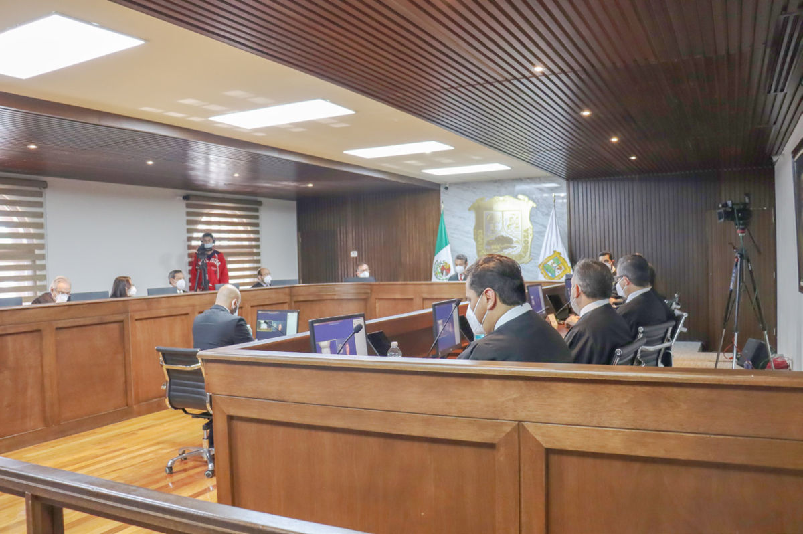
Pleno del Tribunal Superior de Justicia
En el Pleno del Tribunal Superior de Justicia, como órgano de gobierno del Poder Judicial del Estado, este año celebramos 43 sesiones ordinarias y dos extraordinarias en las que atendimos asuntos que tenemos encomendados conforme a las leyes, respecto de los cuales emitimos 208 acuerdos correspondientes a actividades jurisdiccionales y administrativas.
Aunado a lo anterior, autorizamos la inclusión en la lista correspondiente de 34 auxiliares de la administración de justicia y especialistas en diversas materias, así como de tutores, albaceas e interventores.
También, en el Pleno constituido como segunda instancia en los asuntos que determina la ley, celebramos 10 sesiones y emitimos 25 acuerdos; fueron atendidas siete acciones de inconstitucionalidad, de las cuales resolvimos cuatro; admitimos dos controversias constitucionales, resolvimos una cuestión de inconstitucionalidad y dos recursos de reclamación; y además emitimos 50 acuerdos.
En el ámbito jurisdiccional resolvimos dos recursos de apelación en los que el Estado es parte, y uno continúa en gestión; dimos trámite a dos juicios de nulidad y a 15 juicios de amparo.
En auxilio de las autoridades federales, así como de los particulares que presentaron quejas en contra de algún servidor público, integramos 148 expedientes auxiliares y emitimos dentro de los mismos mil 192 acuerdos, y del mismo modo admitimos ocho excitativas de justicia.
Igualmente corresponde al Pleno del Tribunal Superior de Justicia autorizar la recepción de informaciones testimoniales, ante los juzgados competentes, dentro del trámite para obtener la patente de notario; en ese rubro autorizamos, para dicho efecto, la tramitación de 18 procedimientos judiciales y tres procedimientos administrativos disciplinarios.
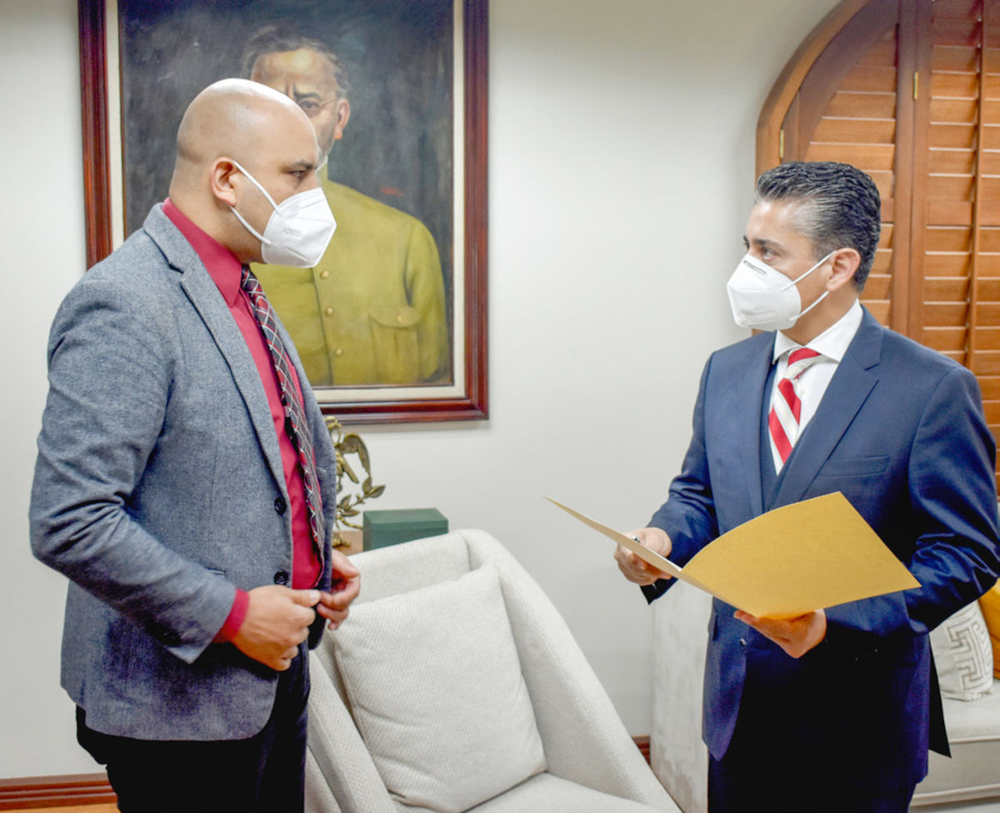
Secretaría General de Acuerdos del Pleno del Tribunal Superior de Justicia del Estado
Dentro del cumplimiento de nuestras obligaciones, durante este año —a través de la Secretaría General de Acuerdos del Pleno— diligenciamos o mandamos a diligenciar 541 exhortos, ocho cartas rogatorias, 17 incompetencias y 11 legalizaciones de firmas.
Corresponde a la Presidencia del Tribunal Superior de Justicia —a través de la Secretaría General de Acuerdos— autorizar el registro de los títulos de abogados, con el objeto de que los profesionistas del derecho puedan ejercer como litigantes en el Poder Judicial del Estado. En este ámbito, durante el 2020 registramos 441 títulos, expidiendo gratuitamente las constancias correspondientes y reexpidiendo cuatro más.
Tabla 7. Atención a solicitudes realizadas por otros tribunales ante la Secretaría General de Acuerdos del Pleno del Tribunal Superior de Justicia
| Rubro | Cantidad |
|---|---|
| Exhortos | 541 |
| Cartas rogatorias | 8 |
| Incompetencias | 17 |
| Legalización de firmas | 11 |
| Total | 577 |
Fuente: Secretaría General de Acuerdos del Pleno del Tribunal Superior de Justicia del Estado de Coahuila de Zaragoza. 2020.
Consejo de la Judicatura
El Consejo de la Judicatura del Estado es un órgano del Poder Judicial con reconocimiento constitucional local previsto en el artículo 143, que tiene como funciones la administración, vigilancia y disciplina de los órganos jurisdiccionales. Toma sus decisiones de manera colegiada mediante acuerdos que aprueban sus integrantes.
Se integra por seis personas consejeras, una de las cuales es quien preside el Tribunal Superior de Justicia, una persona designada por el Poder Ejecutivo del Estado, otra designada por el Congreso del Estado, una persona titular de una magistratura del Tribunal Superior de Justicia del Estado y otra de Tribunal Distrital, así como una persona titular de Juzgado de Primera Instancia.
El Consejo de la Judicatura como órgano de gobierno judicial toma decisiones que rigen la administración, vigilancia y disciplina al interior del Poder Judicial del Estado. De esta manera contribuye a garantizar los Derechos Humanos de las personas, como el de acceso a la justicia. Asimismo, realiza una labor trascendente en materia de corrupción, pues con sus acciones previene y combate este fenómeno social e institucional.
En un Estado constitucional y democrático como es Coahuila de Zaragoza, el Consejo de la Judicatura toma sus decisiones deliberativamente en coordinación con los diversos órganos administrativos y jurisdiccionales de este poder público. Tiene como finalidad implementar medidas administrativas y normativas que contribuyan significativamente para que la impartición de justicia local sea de calidad, eficiente, accesible y moderna, y se ejerza bajo los más altos estándares nacionales e internacionales.
Durante el año 2020 se llevaron a cabo 18 sesiones en las que sus integrantes emitieron un total de 146 acuerdos.
A continuación se expone la actividad que el Consejo de la Judicatura desempeñó, durante el periodo que se informa, en cada uno de sus rubros.
Materia Administrativa
En este rubro, el Consejo de la Judicatura tiene entre otras funciones las siguientes: nombrar y remover a personal de juzgados, de tribunales y de áreas administrativas que no dependan del Pleno y de la Presidencia del Tribunal Superior de Justicia; crear órganos jurisdiccionales; supervisar el funcionamiento de los órganos que integran el Poder Judicial; dictar las providencias necesarias para el mejoramiento de la administración de justicia; y expedir el reglamento interior, los reglamentos y acuerdos generales que sean necesarios para regular el funcionamiento de los órganos del Poder Judicial.
En este año la labor administrativa del Consejo de la Judicatura tuvo cuatro líneas de acción: El plan de acción Covid-19 y la transición hacia la justicia digital, anteriormente expuestos; asuntos varios y atención de juicios de amparo en los que el Consejo de la Judicatura tuvo calidad de parte.
Asuntos varios
Se han emitido diversos acuerdos que atañen a la administración del Poder Judicial y que destacan en su rubro, toda vez que trascienden en la calidad con la que se imparte la justicia por parte de los servidores públicos judiciales.
En efecto, el Consejo de la Judicatura emitió el Acuerdo C-022/2020 para que la consulta de expedientes en el Archivo Judicial General y en los archivos regionales y distritales fuera gratuita.
Asimismo, se emitió un acuerdo para permitir que las personas periodistas y los medios de comunicación pudieran ingresar a las audiencias con libretas, cuadernos, blocks de notas, hojas, lápices, plumas o cualquier otro objeto análogo; y con ello se contribuyó a la transparencia judicial y al acceso a la información.
Mediante el Acuerdo C-064/2020, pronunciado en sesión celebrada el 22 de mayo, se creó el Juzgado Tercero Letrado en Materia Civil del Distrito Judicial de Torreón, con sede en la ciudad de Torreón, Coahuila de Zaragoza.
Respecto a la consolidación del Sistema de Justicia Penal Acusatorio y Oral, el Consejo de la Judicatura emitió el Acuerdo C-065/2020 para crear el Juzgado de Primera Instancia en Materia Penal del Sistema Acusatorio y Oral del Distrito Judicial de San Pedro de las Colonias. Este juzgado inició sus funciones el primero de junio de 2020.
En sesión celebrada el 3 de junio, el Pleno del Consejo de la Judicatura emitió el acuerdo mediante el cual se establece el Protocolo de Actuación en Audiencias Vía Remota para las y los operadores del Sistema de Justicia Penal Acusatorio y Oral.
Por otro lado, en un ejercicio de diálogo judicial con el Tribunal Superior de Justicia del Estado, emitió el Acuerdo C-135/2020 mediante el cual se aprobó la reforma al Reglamento de los Auxiliares de la Administración de Justicia inscritos en este Tribunal.
En el rubro de acceso a la justicia para las mujeres, y el de sancionar y erradicar la violencia de género, se emitió el Acuerdo C-141/2020 mediante el cual se creó la función jurisdiccional de juezas y jueces especializados en violencia familiar contra la mujer, con competencia mixta del Poder Judicial del Estado de Coahuila de Zaragoza.
Por último, mediante el Acuerdo C-145/2020, emitido en la sesión celebrada el 10 de diciembre de 2020, este Consejo determinó la supresión del Tribunal de Apelación Especializado en Materia de Adolescentes del Poder Judicial del Estado de Coahuila de Zaragoza.
Atención de juicios de amparo
Debido a que el Consejo de la Judicatura tiene a su cargo facultades o poderes de decisión o ejecución cuyo ejercicio trasciende de manera imperativa, estos son impugnables a través del juicio de amparo, por lo que durante este periodo se ha participado en procedimientos de esta naturaleza.
En el área de asuntos generales, durante el periodo que se informa se iniciaron ante los juzgados federales 29 juicios de amparo, de los cuales 27 se encuentran en trámite y en dos asuntos el juicio fue sobreseído.
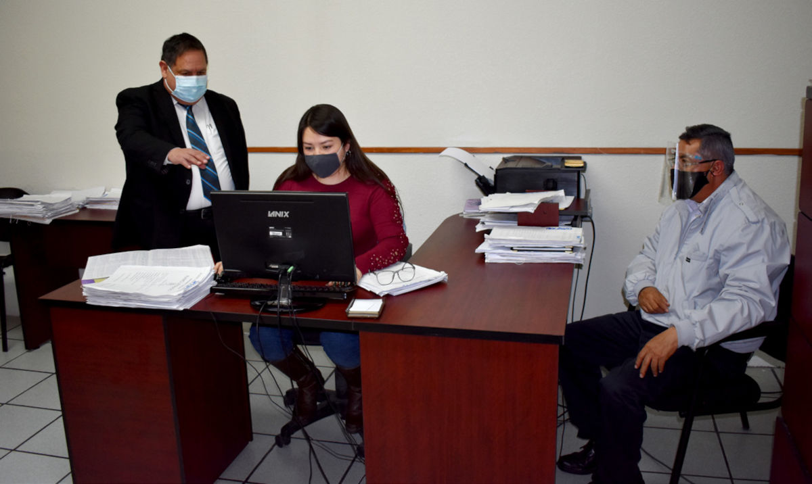
Rubro de vigilancia, acciones desarrolladas por la Visitaduría Judicial General
Una de las principales funciones que ejerce el Consejo de la Judicatura —a través de la Visitaduría Judicial General— es la de inspección, a fin de verificar el adecuado funcionamiento de los órganos del Poder Judicial, las necesidades de los mismos, el desempeño de sus miembros y las condiciones de trabajo.
Derivado de la naturaleza propia de las visitas de inspección, realizadas de manera ordinaria a los diferentes órganos que integran este poder, el Consejo de la Judicatura determinó que durante este periodo de contingencia sanitaria esta tarea debía atenderse de forma tal que se privilegiara la salud de las y los servidores judiciales.
Debido a ello, se modificó el esquema de las visitas ordinarias a los juzgados y tribunales. El 29 de septiembre, el Consejo de la Judicatura del Estado emitió el Acuerdo C-118/2020, relativo a la aprobación de las visitas judiciales ordinarias del año que se informa, determinando que la inspección judicial se lleve a cabo mediante la rendición de un informe por parte de los órganos jurisdiccionales, que analice y estudie la Visitaduría Judicial General.
El Consejo de la Judicatura, a través del análisis de cada uno de los órganos del Poder Judicial y de conformidad con la situación actual, dictó las medidas necesarias para proveer lo conducente y velar para que la justicia se administre de manera oportuna y eficaz, de forma tal que, no obstante la situación epidemiológica que vivimos, se diera continuidad a esta importante tarea a su cargo.
En ese tenor, durante este año llevamos a cabo dos visitas ordinarias a 61 órganos jurisdiccionales y seis no jurisdiccionales en las que, entre otras cosas, se recogió la entrevista y participación ciudadana de 57 personas, las cuales comparecieron a fin de manifestar inquietudes o puntos de vista sobre el actuar del personal que labora en las áreas inspeccionadas.
Durante estas visitas, comparecieron 18 personas que presentaron quejas o denuncias concretas en contra de los titulares y demás servidores públicos de dichos órganos, mismas que fueron ratificadas ante los Visitadores Judiciales y, sin excepción, turnadas para su conocimiento al Consejo de la Judicatura, que determinó lo conducente.
Asimismo, en cada visita entrevistamos al personal jurisdiccional y administrativo, de quienes recibimos 91 inquietudes de diversa naturaleza, las cuales fueron turnadas a la dependencia correspondiente dentro de este poder público.
En cuanto a las visitas extraordinarias, este año practicamos tres sobre hechos concretos que pudieran presumir irregularidades cometidas por algún servidor público sujeto a supervisión, de las que se dio cuenta al Consejo de la Judicatura.
En cumplimiento a lo dispuesto por el artículo 14 de la Ley de Entrega-Recepción del Estado y Municipios de Coahuila de Zaragoza, intervenimos en 25 actos preparatorios y procedimientos respectivos de Entrega-Recepción, con motivo de la conclusión de cargo de titulares de juzgado, readscripciones y supresión de juzgados.
Rubro de disciplina
A) Procedimientos disciplinarios
El rubro disciplinario es uno de los pilares de la actividad del Consejo de la Judicatura, quien vigila que el quehacer de las y los servidores públicos se guíe por valores y principios de legalidad, profesionalismo, honradez, honestidad, responsabilidad, diligencia, respeto, justicia y equidad.
Para ello, el Consejo de la Judicatura tramita un procedimiento materialmente jurisdiccional, con el respeto y protección del debido proceso y de las garantías judiciales de las personas servidoras públicas a quienes se le atribuye la comisión de faltas administrativas —previstas en la Ley Orgánica del Poder Judicial del Estado de Coahuila de Zaragoza—.
En este sentido, durante el periodo que informamos, mediante este órgano admitimos 120 denuncias o quejas planteadas por personas justiciables; resolvimos 237 expedientes administrativos y auxiliares, que corresponden al 2020 y años anteriores; y se determinó, como medida cautelar, la suspensión temporal del cargo de dos funcionarios judiciales.
Tabla 8. Expedientes administrativos y auxiliares resueltos
| Rubro | Cantidad |
|---|---|
| Inicio de procedimientos (algunos se instruyen contra dos o más servidores públicos) | 40 |
| No inicio de procedimientos por pruebas insuficientes | 11 |
| Improcedentes | 92 |
| Sin materia | 31 |
| Falta de competencia | 10 |
| Prescripción | 11 |
| Se desecha el escrito de queja | 15 |
| Total | 210 |
Fuente: Consejo de la Judicatura del Estado de Coahuila de Zaragoza. 2020.
Tabla 9. Sanciones impuestas por el Consejo de la Judicatura
| Rubro | Cantidad |
|---|---|
| Apercibimiento | 2 |
| Suspensión | 2 |
| Absolutorias | 23 |
| Total | 27 |
Fuente: Consejo de la Judicatura del Estado de Coahuila de Zaragoza. 2020.
Por otra parte, en la actualidad se tienen los siguientes procedimientos administrativos:
Tabla 10. Procedimientos administrativos
| Tipo de procedimiento | Cantidad |
|---|---|
| En trámite para recabar medios de prueba para mejor proveer respecto al inicio, o no, del procedimiento disciplinario | 96 |
| Expedientes turnados a la Comisión de Vigilancia y de Disciplina para que elabore el proyecto de inicio, de no inicio o de improcedencia, según sea el caso | 90 |
| Expedientes turnados a la Comisión de Vigilancia y de Disciplina para que elabore el proyecto de resolución definitiva que corresponda | 25 |
| Total | 211 |
Fuente: Consejo de la Judicatura del Estado de Coahuila de Zaragoza. 2020.
Este año radicamos 41 expedientes auxiliares y resolvimos 27, incluidos de años anteriores, con relación a declarar sin materia el procedimiento por falta de ratificación del escrito de queja, incompetencia, falta de pruebas o porque se le dio un número de expediente administrativo disciplinario.
A la fecha del presente documento se encuentran en trámite los siguientes expedientes auxiliares:
Tabla 11. Expedientes auxiliares
| Estatus | Cantidad |
|---|---|
| Pendientes de resolver del 2020 | 10 |
| Pendientes de resolver de años anteriores | 4 |
| Total | 14 |
Fuente: Consejo de la Judicatura del Estado de Coahuila de Zaragoza. 2020.
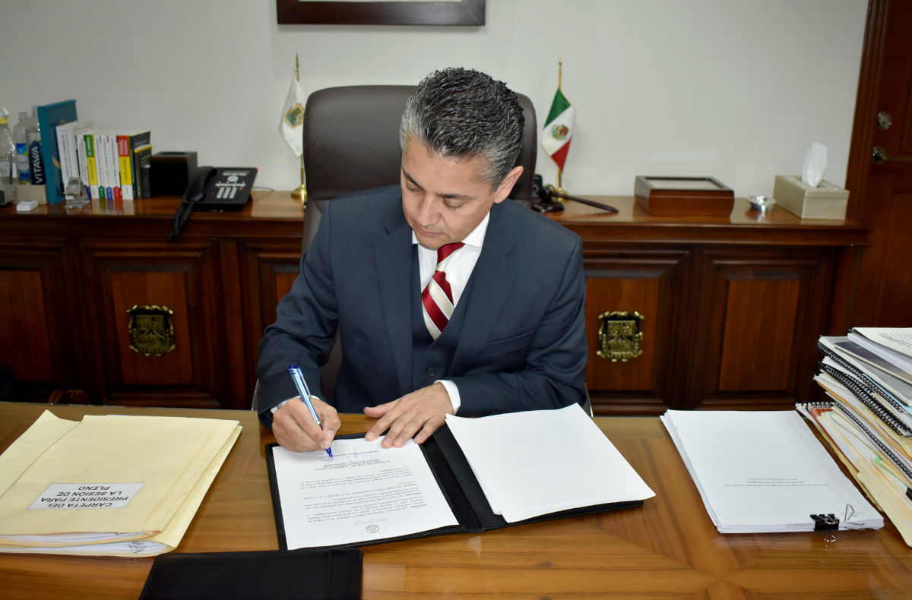
Cabe resaltar que desde el Consejo de la Judicatura emitimos resoluciones con perspectiva de Derechos Humanos y de género, incorporando esta última específicamente en los casos en que se ha observado la necesidad de ello, como son, por mencionar algunos, asuntos de violencia laboral y sexual por razón de género. Con esto, el Consejo ha asumido su función constitucional con enfoque de derechos en la materia disciplinaria.
B) Atención a juicios de amparo en los asuntos disciplinarios
En lo que respecta a la atención y tramitación de juicios de amparo en los que el Consejo de la Judicatura fue señalado como autoridad responsable, atendimos 43 asuntos, de los cuales nueve corresponden a juicios iniciados en el 2020, 31 al 2019 y tres al 2017.
Cabe precisar que en el año 2020 se resolvieron cuatro juicios de amparo: en uno se concedió que se emitiera otra resolución definitiva, en otro se sobreseyó el juicio de amparo y dos fueron negados a los funcionarios.
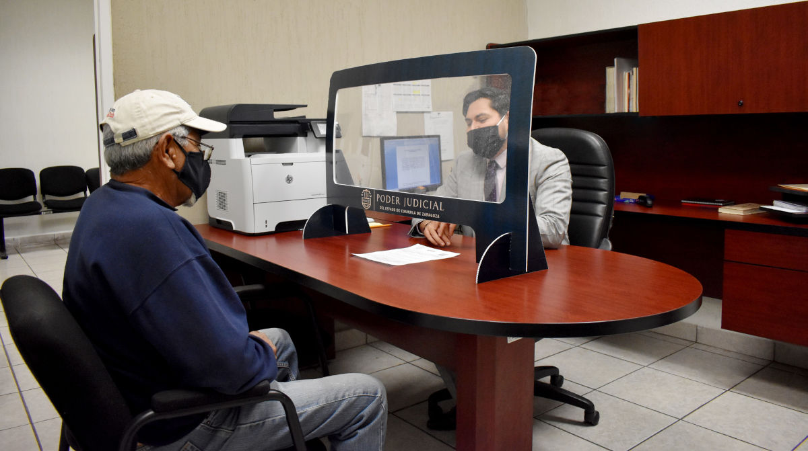
Centro de Medios Alternos de Solución de Controversias
En el Poder Judicial del Estado, a través del Centro de Medios Alternos de Solución de Controversias (CEMASC), garantizamos el acceso a la justicia por vías autocompositivas o no contenciosas, a través de la mediación y otros mecanismos de justicia alternativa, en el marco de las atribuciones que nos confiere la Ley de Medios Alternos de Solución de Controversias para el Estado y la Ley Nacional de Mecanismos Alternativos de Solución de Controversias en Materia Penal.
Entre otras acciones, atendemos gratuitamente los casos en materia civil, familiar, mercantil y penal que los particulares nos solicitan o que nos son remitidos por órganos jurisdiccionales, agencias del Ministerio Público y organismos públicos o privados; promovemos y difundimos la cultura de la solución pacífica de los conflictos a través de medios alternos; y asistimos a quienes voluntariamente deciden terminar una controversia presente, o prevenir una futura, para que logren acuerdos satisfactorios y equilibrados.
Actividades relativas a la facilitación de la solución alterna de conflictos
A fin de garantizar el derecho humano de acceso a la justicia por medio de mecanismos alternativos de solución de controversias, brindamos información y orientación a las personas que lo soliciten y, si deciden intentar solventar su conflicto, las apoyamos con servicios de mediación y otros mecanismos alternativos como procedimientos restaurativos. En este rubro, durante 2020 aperturamos mil 892 expedientes de mecanismos alternativos.
Tabla 12. Servicios prestados por el Centro de Medios Alternos de Solución de Controversias
| Actividad | Cantidad |
|---|---|
| Personas entrevistadas para la exploración del conflicto | 5,811 |
| Invitaciones enviadas a efecto de acercar a otras partes involucradas en el conflicto | 6,669 |
| Procedimientos aperturados | 1,892 |
| Procedimientos concluidos con acuerdo | 1,415 |
| Procedimientos concluidos con acuerdo cumplido | 1,274 |
| Procedimientos reaperturados | 2 |
| Solicitantes que fueron orientados o derivados a otra instancia | 57 |
Fuente: Centro de Medios Alternos de Solución de Controversias del Poder Judicial del Estado de Coahuila de Zaragoza, 2020.
Mediación intrajudicial
Uno de los objetivos de los mecanismos alternativos es la oportunidad de llegar a acuerdos sobre conflictos que tengan el carácter judicial en distintas materias. Este año, a través del Centro de Medios Alternos de Solución de Controversias realizamos 142 procedimientos intrajudiciales, de los cuales 73 pusieron fin a conflictos de carácter civil, familiar, mercantil y penal.
En materia penal, la reparación del daño no necesariamente está vinculada a la sanción del responsable, pues esta se puede dar en un acuerdo reparatorio. En el caso del año que se informa, esta última opción se reflejó en un monto superior a los 11.3 millones de pesos.
Resolución de asuntos prejudiciales
Este año, 816 conflictos distribuidos en el estado fueron resueltos por mecanismos alternativos, de tal forma que al dirimir su controversia se evitó iniciar un procedimiento judicial.
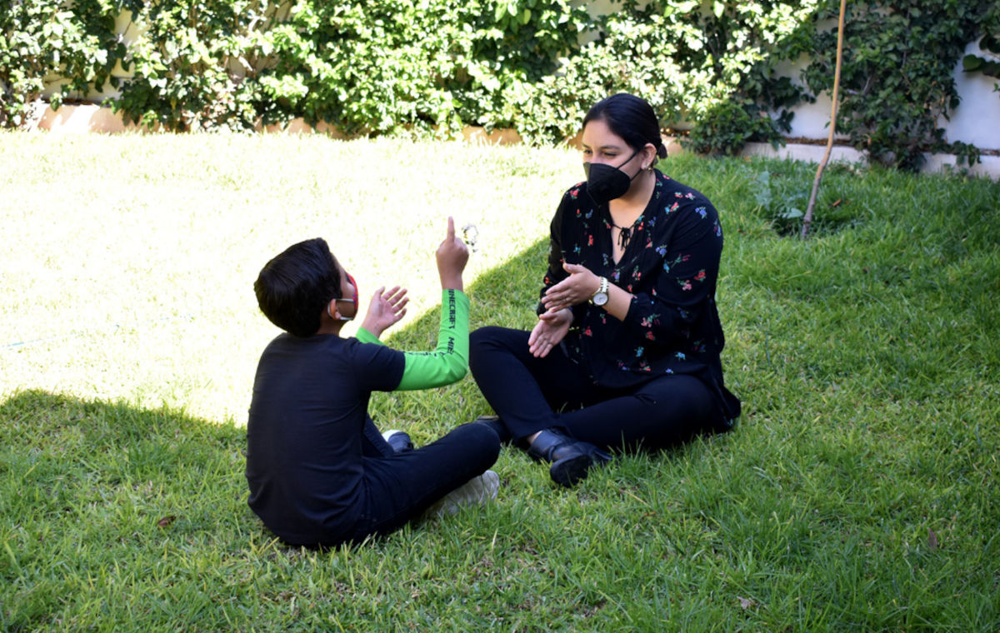
Los medios alternativos nos permiten formar puentes entre las personas para que exista un mejor entendimiento entre ellas y los problemas cotidianos tengan una solución más justa y rápida, que nos permita vivir en una sociedad más pacífica.
Centro de Evaluación Psicosocial
La calidad en el servicio forma parte de los valores que acompañan las acciones del Poder Judicial, por lo que nuestros órganos no jurisdiccionales se rigen por los más altos estándares y cuentan con personal capacitado, garantizando de esta manera un efectivo acceso a la justicia.
Es así que con el propósito de contar con espacios físicos adecuados que nos permitan brindar mejor atención, y continuar con nuestro quehacer en la elaboración de dictámenes y evaluaciones solicitados por los juzgados en diversas materias, optimizamos la infraestructura del Centro de Evaluación Psicosocial (CEP) mediante las siguientes acciones:
- Inauguramos la ampliación de las instalaciones en el Centro de Evaluación Psicosocial en Saltillo.
- Iniciamos operaciones en las nuevas instalaciones del Centro de Evaluación Psicosocial en Torreón.
- Habilitamos oficinas del área de Trabajo Social en las instalaciones del Centro de Evaluación Psicosocial en Piedras Negras.
Estas acciones permitieron que las y los usuarios —que respondieron a nuestra encuesta de Calidad del Servicio— consideren la atención brindada como satisfactoria en 100 por ciento, pues además de recibir un servicio profesional y objetivo, se cuenta con espacios independientes cuyas condiciones facilitan una atmósfera de confianza que permite el diálogo franco y fructífero con las personas atendidas.
Este año nos enfrentamos a grandes retos y fue necesario adaptarnos a nuevas condiciones de trabajo; ante ello implementamos estrategias y protocolos de actuación en el quehacer profesional, que permitieron garantizar a las y los usuarios un servicio seguro y de calidad. De esta manera cumplimos en tiempo y forma con los dictámenes solicitados por los distintos juzgados, así como con los informes de trabajo social para el Departamento de Psicología.
De la misma manera, en apego a los protocolos marcados por las instancias correspondientes, se limitó el acceso a los edificios a personas consideradas dentro de grupos vulnerables, como embarazadas, adultos mayores y menores, por lo que tuvimos un flujo moderado de usuarias y usuarios. Bajo dichas condiciones, este año atendimos a 22 mil 360 personas.
Continuamos nuestras acciones acorde a lo establecido en la Convención Americana de Derechos Humanos y la Convención sobre los Derechos del Niño; ambos instrumentos señalan que las y los menores tienen derecho a la participación activa en un procedimiento de carácter judicial, por medio de un representante u órgano apropiado. Este año habilitamos —de junio a diciembre— las instalaciones en Saltillo del Centro de Evaluación Psicosocial, en las que atendimos 249 solicitudes de pruebas de capacidad que permitieron entrevistar a 337 menores, 44 de los cuales acudieron a comparecer en presencia de juzgadores.
Por su parte, en el resto de las unidades recibimos 332 solicitudes de pruebas de capacidad, de las cuales mediante carta de consentimiento del progenitor custodio o tutor se pudieron entrevistar a 373 menores.
En total, atendimos 581 solicitudes de pruebas de capacidad, en donde se entrevistaron a 710 menores. De esta población, el 51 por ciento resultó con aptitud para comparecer ante un juzgador.
Asimismo, este año recibimos dos mil 88 canalizaciones derivadas de los distintos órganos jurisdiccionales, de las cuales mil 997 corresponden a los Juzgados de Primera Instancia en Materia Familiar, 41 a los Juzgados de Primera Instancia en Materia Penal del Sistema Acusatorio y Oral, y dos a los Juzgados de Primera Instancia en Materia Civil.
Resultado de dichas canalizaciones, desarrollamos diversas acciones por parte del personal de Psicología y de Trabajo Social, quienes acudieron a 913 audiencias para el desahogo y cuestionamiento de los dictámenes emitidos en materia familiar.
Además, a través de nuestras especialistas realizamos 20 mil 162 entrevistas, de las cuales siete mil 981 se hicieron por el Departamento de Psicología y 12 mil 181 por el área de Trabajo Social. E, igualmente, realizamos 12 mil 498 visitas de investigación de campo, que incluyen los ámbitos educativo, laboral y de contexto en donde se desenvuelven las personas involucradas.
Tabla 13. Entrevistas y visitas de Psicología y Trabajo Social
| Departamento | Cantidad |
|---|---|
| Entrevistas de Psicología | 7,981 |
| Entrevistas de Trabajo Social | 12,181 |
| Visitas de investigación de campo | 12,498 |
Fuente: Centro de Evaluación Psicosocial del Poder Judicial del Estado de Coahuila de Zaragoza. 2020.
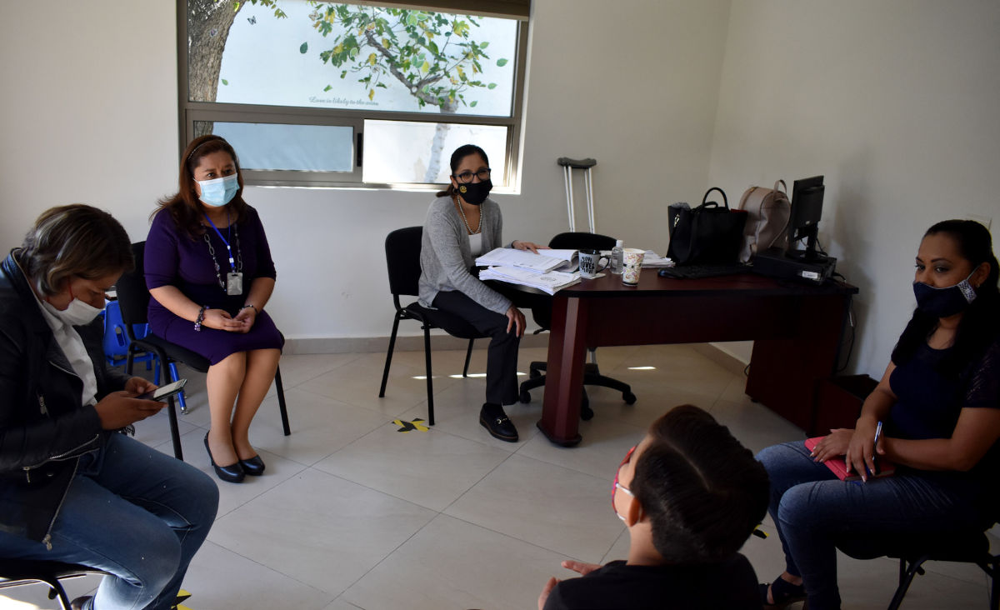
Durante este año emitimos mil 497 dictámenes, que coadyuvan en la administración de justicia y además mil 178 informes de trabajo social para el área de psicología, los cuales complementan los dictámenes que formulamos a los juzgados.
Tabla 14. Dictámenes e informes emitidos por el Centro de Evaluación Psicosocial
| Distrito Judicial | Dictámenes emitidos | Informes de trabajo social |
|---|---|---|
| Monclova | 137 | 138 |
| Parras de la Fuente | 78 | 76 |
| Río Grande | 213 | 173 |
| Sabinas | 61 | 48 |
| Saltillo | 623 | 412 |
| San Pedro de las Colonias | 41 | 44 |
| Torreón | 344 | 287 |
| Total | 1,497 | 1,178 |
Fuente: Centro de Evaluación Psicosocial del Poder Judicial del Estado de Coahuila de Zaragoza. 2020.
Registro Estatal de Deudores Alimentarios Morosos
Conforme a lo dispuesto en la Ley para la Familia de Coahuila de Zaragoza, corresponde al Poder Judicial el manejo del Registro Estatal de Deudores Alimentarios Morosos (REDAM), en el que se inscribirá a las personas que han dejado de cumplir sus obligaciones alimentarias.
Mediante el REDAM emitimos 148 constancias de no deudor entre particulares y solicitudes de la Procuraduría para Niños, Niñas y la Familia (Pronnif), acción con la que hacemos patente la colaboración interinstitucional en pro de los coahuilenses.
A partir de este año, el trámite de la constancia de no registro de deudor alimentario moroso se realiza en línea, el cual inicia con el pago de derechos correspondiente en una sucursal bancaria; luego, el usuario envía por correo electrónico la evidencia del depósito y por ese mismo medio recibe dicho documento.
Instituto Estatal de Defensoría Pública
La defensa pública se ejerce con libertad y autonomía. Los defensores públicos y asesores jurídicos tienen independencia en el ejercicio de su función, actúan según su criterio técnico jurídico y guardan reserva o secreto de la información revelada por las y los usuarios, o por terceros, con ocasión del ejercicio de la defensa.
En el Instituto Estatal de Defensoría Pública (IEDP) actuamos a favor de la protección de los Derechos Humanos de las personas de acuerdo a la legislación aplicable, por lo que desarrollamos diversos modelos de atención especializada que nos permiten brindar orientación y asesoría jurídica.
Este año implementamos, entre otras, las siguientes acciones:
- Otorgamos atención a distancia y seguimiento de casos a través de videollamadas, llamadas telefónicas, correos electrónicos y mensajes de texto vía WhatsApp®.
- Brindamos atención presencial por medio de un sistema de citas, lo que contribuyó a cumplir con la sana distancia y brindar seguridad a nuestros usuarios, al evitar aglomeraciones.
- Priorizamos la atención de acuerdo a la situación planteada en particular, atendiendo en primer momento los casos considerados como urgentes.
- Continuamos las visitas domiciliarias en los supuestos en los que la condición no permitía al usuario acudir a nuestras instalaciones, observando siempre los protocolos de distanciamiento social, con la finalidad de facilitar el acceso a la justicia.
En marzo, Coahuila fue sede del XVI Congreso Nacional de Defensorías Públicas Estatales: Visión y Retos de las Defensorías Públicas de México, el cual fue dirigido a 263 miembros de la comunidad jurídica del país, abordando diversas temáticas de relevancia en el quehacer de las y los defensores públicos por parte de expertos nacionales e internacionales, y con presencia de autoridades federales.
También, establecimos una alianza estratégica con Justice Access for Victims and the Accused (JAVA), filial de la Agencia de los Estados Unidos para el Desarrollo Internacional (USAID, por sus siglas en inglés), quien en el transcurso del año nos otorgó apoyo en materia de capacitación y rediseño institucional.
Iniciamos el proyecto Certificación para la Justicia en México (CEJUME), coordinado por el Centro de Estudios sobre la Enseñanza y Aprendizaje del Derecho A.C. (CEEAD), centro de investigación independiente dedicado a la innovación, desarrollo, implementación y evaluación de iniciativas para transformar la educación jurídica y el ejercicio profesional del derecho, mediante el curso de preparación para el EXMIDA (examen de conocimientos sobre el sistema de justicia penal); actividad en la que participaron las y los defensores públicos de todo el estado.
Lo anterior fue posible con el apoyo de la USAID, por conducto de la Iniciativa Mérida, dirigido a 51 defensores públicos penales del estado.
En el periodo que se informa, atendimos a 140 mil 298 usuarias y usuarios del IEDP. Así, en la Unidad de Defensa Administrativa y Asesoría Jurídica atendimos a 38 mil 784 personas; en la Unidad de Defensa Civil, Familiar y Mercantil, 50 mil 211; en la Unidad de Defensa Penal, 28 mil 711; en la Coordinación de Servicios Auxiliares, dos mil 562; en la Coordinación de Calidad, seis mil 32; en la Coordinación de Comunicación Social, 167; y en la Coordinación Académica y de Servicio Civil de Carrera, mil 39.
De igual forma, brindamos atención telefónica a usuarias y usuarios que requieren de los servicios del IEDP, les informamos el estado de su proceso y les otorgamos asesoría jurídica. En el 2020 atendimos por este medio a 11 mil 792 personas.
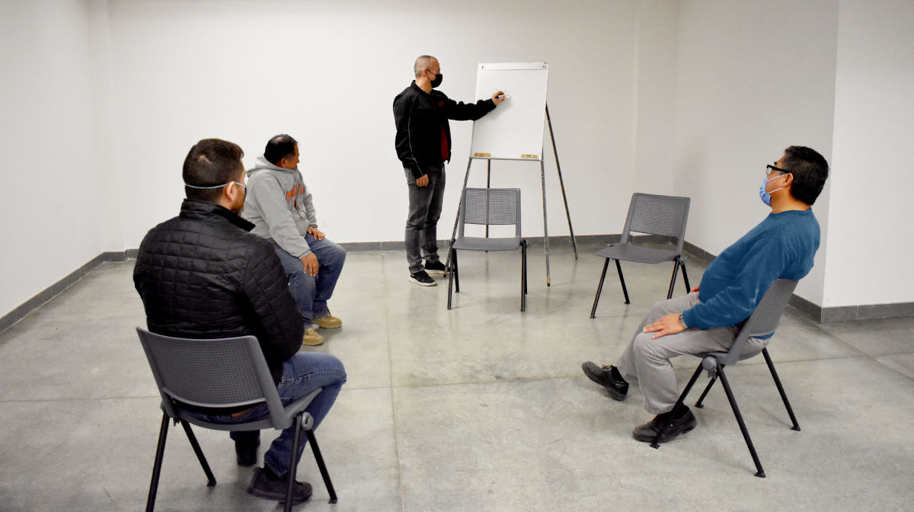
Unidad de Asistencia Administrativa y Asesoría Jurídica
Durante el periodo que se informa, desde la Unidad de Asistencia Administrativa y Asesoría Jurídica (UDA) del IEDP, brindamos atención pronta, eficiente, equitativa y transparente a 38 mil 784 personas en situación de desventaja económica que requirieron de manera presencial, telefónica o virtual los servicios gratuitos de orientación, asesoría y asistencia jurídica; la UDA es el primer contacto de atención para las y los usuarios que no pueden contratar un abogado particular.
De igual forma continuamos con el programa Defensoría Móvil, el cual desarrollamos con diferentes mecanismos para acercarnos a la población a través de medios tecnológicos e internet. Este año atendimos a mil 81 personas.
Tabla 15. Personas atendidas en Brigadas de Defensoría Móvil y Macrobrigadas por la Unidad de Asistencia Administrativa y Jurídica
| Delegación | Defensoría Móvil | Macro Brigadas | Total |
|---|---|---|---|
| Acuña | 48 | 0 | 48 |
| Monclova | 0 | 72 | 72 |
| Parras | 9 | 0 | 9 |
| Piedras Negras | 175 | 20 | 195 |
| Sabinas | 65 | 29 | 94 |
| Saltillo | 568 | 0 | 568 |
| Torreón | 216 | 23 | 239 |
| Total | 1,081 | 144 | 1,225 |
Fuente: Instituto Estatal de Defensoría Pública. Poder Judicial del Estado de Coahuila de Zaragoza. 2020.
Este año impartimos de manera virtual el Taller de Orientación Prematrimonial (TOP), para lo cual implementamos ideas innovadoras que nos ayudaron a cumplir con las necesidades y requerimientos de los futuros contrayentes. Prueba de ello fueron las siguientes acciones:
- Ampliamos a todo el estado la agenda del TOP en horario matutino y vespertino, con la finalidad de facilitar la asistencia de parejas que por sus actividades laborales se les dificulta cumplir con un horario específico.
- Facilitamos la atención y comunicación con los usuarios a través de la aplicación Whatsapp®; con ello brindamos información y agendamos citas a las parejas, sin necesidad de salir de su domicilio.
- Entregamos las constancias de este taller vía correo electrónico.
En este rubro, en el periodo que se informa impartimos el TOP a seis mil 429 parejas en todo el estado desde la oficina con sede en Saltillo, haciendo eficiente la utilización de recursos materiales y humanos en la coordinación, calendarización y exposición del taller.
Tabla 16. Total de parejas que asistieron al Taller de Orientación Prematrimonial
| Delegación | Parejas |
|---|---|
| Acuña | 518 |
| Monclova | 1,333 |
| Parras | 85 |
| Piedras Negras | 496 |
| Sabinas | 591 |
| Saltillo | 1,446 |
| San Pedro | 258 |
| Torreón | 1,702 |
| Total | 6,429 |
Fuente: Instituto Estatal de Defensoría Pública. Poder Judicial del Estado de Coahuila de Zaragoza. 2020.
En lo que corresponde a la atención y representación en audiencia a las y los servidores públicos a quienes se les instaura un procedimiento administrativo de responsabilidad, ya sea ante el Consejo de la Judicatura o la Dirección General de Contraloría y Visitaduría de la Fiscalía General de Justicia del Estado, este año atendimos a 109 servidores públicos por supuestas irregularidades cometidas en el desempeño de su función.
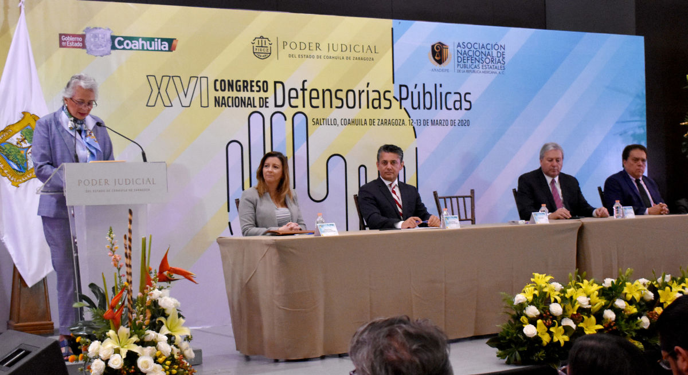
Unidad de Defensa Civil, Familiar y Mercantil
Esta unidad tiene como finalidad representar, defender, orientar y asesorar legal y gratuitamente a nuestras usuarias y usuarios ante las autoridades judiciales en esas materias.
En el periodo que se informa, atendimos a 50 mil 211 personas, principalmente vía telefónica, quienes recibieron asesoría en asuntos relacionados con alimentos o medidas precautorias por violencia familiar; asimismo, orientamos a las y los usuarios en la solicitud de audiencias por medios digitales. También iniciamos cinco mil 372 asuntos, tenemos en trámite tres mil 805 y concluimos cinco mil 714.
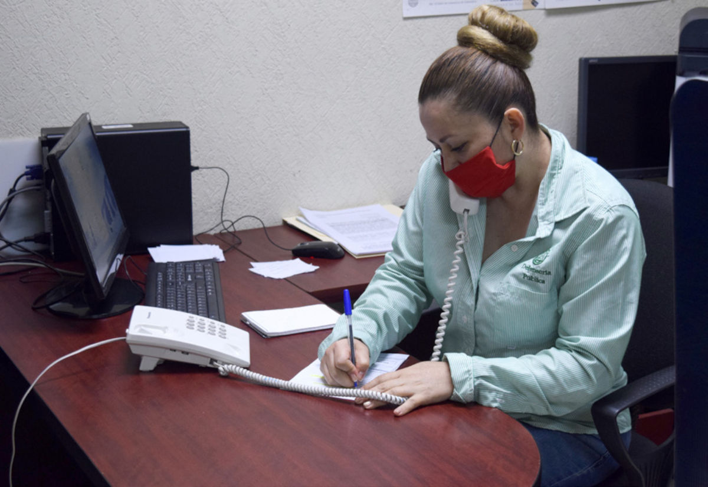
Unidad de Defensa Penal
En la Unidad de Defensa Penal otorgamos nuestros servicios de defensa adecuada y gratuita a quienes tienen el carácter de acusado, imputado o sentenciado, y garantizamos el derecho constitucional del debido proceso.
Durante este año, en coordinación con las autoridades administrativas del Centro Penitenciario Varonil de Saltillo, promovimos que las visitas carcelarias se realizaran por medio de videoconferencia, de tal manera que 40 internos fueron beneficiados bajo esta modalidad.
También llevamos a cabo el desahogo de audiencias virtuales en todas sus etapas, así como de juicio oral y salidas alternas, en las cuales participaron defensoras y defensores públicos de todos los distritos judiciales.
Además de lo anterior, dentro de la UDP contamos con otros indicadores que nos permiten medir las actividades que realiza el defensor público, como son los asuntos iniciados en cada etapa del proceso penal, los asuntos concluidos, la cantidad de audiencias —que en este año fueron presenciales y virtuales—, y asesorías y promociones realizadas.
Tabla 17. Asuntos iniciados, en trámite y concluidos en la Unidad de Defensa Penal
| Estatus | Cantidad |
|---|---|
| Iniciados | 6,536 |
| En trámite | 2,758 |
| Concluidos | 5,488 |
| Audiencias desahogadas | 10,980 |
Fuente: Instituto Estatal de Defensoría Pública. Poder Judicial del Estado de Coahuila de Zaragoza. 2020.
Cabe precisar que del número de asuntos que se judicializan en cada Centro de Justicia Penal del estado, la UDP del Instituto Estatal de Defensoría Pública asume la defensa técnica del 84 por ciento de los mismos, lo que refleja la confianza de la ciudadanía en los servicios que le proporciona nuestro personal.
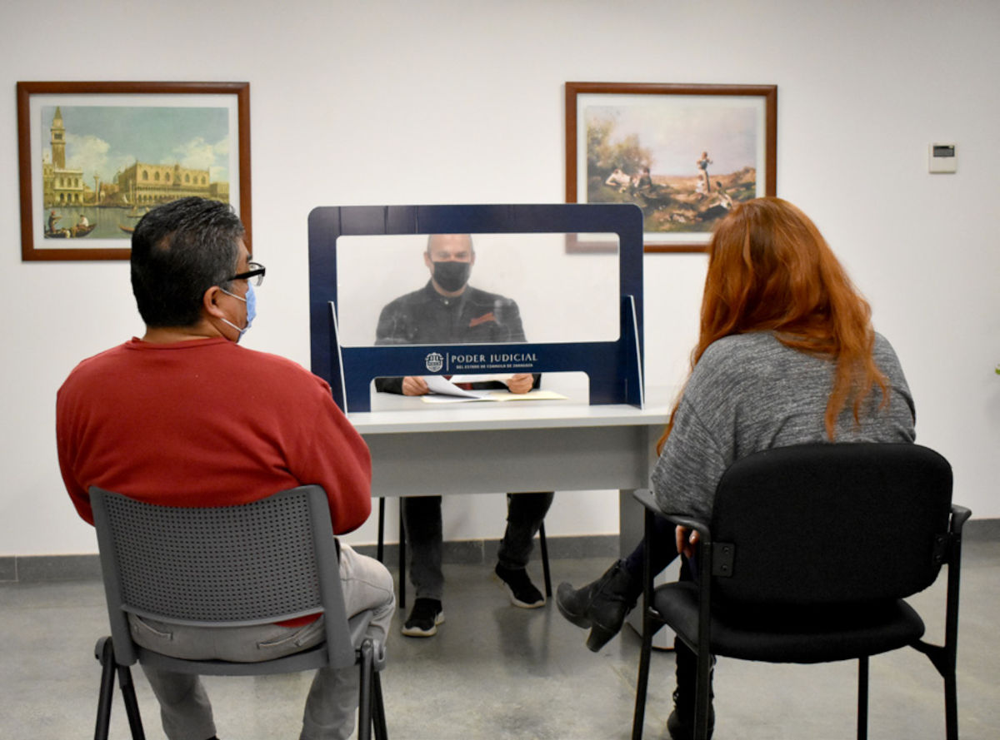
Coordinación de Servicios Auxiliares
La coordinación de servicios auxiliares, es el área del IEDP a la que le corresponde dar soporte técnico y de investigación en la labor que desempeñan las y los asesores jurídicos y defensores públicos. Las diligencias de investigación realizadas en 2020 fueron dos mil 562.
Tabla 18. Actos de investigación realizados en la Coordinación de Servicios Auxiliares del IEDP
| Tipo | Cantidad |
|---|---|
| Gestiones | 882 |
| Inspecciones de lugar | 38 |
| Entrevistas realizadas | 489 |
| Citatorios | 567 |
| Dictámenes psicológicos | 37 |
| Oficios para solicitar información | 549 |
| Total | 2,562 |
Fuente: Instituto Estatal de Defensoría Pública. Poder Judicial del Estado de Coahuila de Zaragoza. 2020.
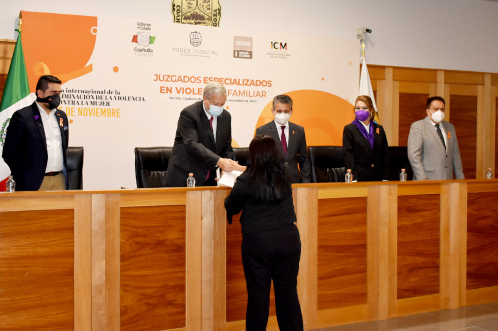
Cuando una mujer sufre violencia por parte de su pareja y busca denunciar, necesita también asegurar en muchos casos la seguridad y el sustento de sus hijas e hijos. Brindar esta seguridad desde el inicio, protege a las mujeres de continuar dentro de una relación violenta por la incertidumbre económica o familiar.
Juzgados Especializados en Violencia Familiar
A lo largo de los años, la violencia familiar ha incrementado de tal manera que se convirtió en la segunda causa penal más común en Coahuila, solo detrás de la posesión de narcóticos y narcomenudeo. En el año 2019 ingresaron al Poder Judicial mil 50 causas por este delito, siendo el 13 por ciento del total. En ese contexto, y tras una evaluación por parte del Poder Judicial de Coahuila y el Gobierno del Estado —a través de la Secretaría de Gobierno, con acompañamiento del Instituto Coahuilense de las Mujeres—, se promovió la creación de los Juzgados Especializados en Violencia Familiar con tres objetivos muy claros: garantizar la seguridad de las mujeres y sus hijas e hijos, asegurar los alimentos y la guarda y custodia.
Con lo anterior, respondemos de manera contundente a la situación de violencia familiar contra las mujeres, velando por sus intereses y los de sus hijos, de manera que no solo cumplimos con lo estipulado en la Constitución Política de los Estados Unidos Mexicanos y demás leyes federales, sino que además observamos los instrumentos internacionales como la Convención Belém do Pará, que establece en su artículo 4 que toda mujer tiene derecho al goce, ejercicio y protección de todos los Derechos Humanos —entre otros, a un recurso sencillo y rápido ante los tribunales competentes que la ampare contra actos que vulneren sus derechos—.
Por ello, se creó la función jurisdiccional de las personas juzgadoras especializadas en violencia familiar contra la mujer, con competencia mixta en los distritos judiciales de Acuña, Monclova, Río Grande, Sabinas, Saltillo y Torreón, que podrán incrementar de acuerdo a las necesidades del servicio.
Para la efectiva implementación de estos órganos especializados se llevó a cabo la certificación de 115 servidores públicos que intervendrán en ellos, por parte del Centro de Estudios Socio Jurídicos Latinoamericanos (CESJUL), con sede en Colombia.
El personal capacitado abarca a todos los juzgadores en materia familiar y penal en el estado, personal de Defensoría Pública, de las agencias del Ministerio Público de la Fiscalía General de Justicia del Estado, y a personal del Centro de Justicia y Empoderamiento de las Mujeres y del Instituto Coahuilense de las Mujeres. Dicha capacitación tuvo una duración de 100 horas e incluyó temas como los derechos de las víctimas, la argumentación jurídica con perspectiva de género, la violencia contra las mujeres en el entorno familiar y las medidas de protección.
Posteriormente se efectuaron simulacros para los intervinientes del proceso en los distintos distritos judiciales donde operarán los juzgados especializados; dichos ensayos se llevaron a cabo en el Centro de Justicia Penal de Saltillo, bajo la coordinación de la maestra Karla Micheel Salas Ramírez, abogada penalista con reconocimiento internacional en defensa de víctimas de violencia.
Finalmente, se elaboró un Protocolo de Actuación con la finalidad de regular el quehacer de las personas juzgadoras y las áreas administrativas del Poder Judicial, en coordinación con las diversas dependencias que intervienen en la operación de los sistemas de justicia penal y familiar, de conformidad con lo establecido en las legislaciones de la materia.
Con esto priorizamos los tres objetivos que motivaron la competencia de los nuevos juzgados especializados, como temas de urgente atención y con el enfoque de justicia con perspectiva de género. Conforme al Acuerdo del Consejo de la Judicatura del Estado de Coahuila de Zaragoza, la persona juzgadora tendrá competencia mixta puesto que conocerá de conflictos jurisdiccionales en materia penal y familiar, a fin de que se aborden desde una perspectiva pluridimensional.
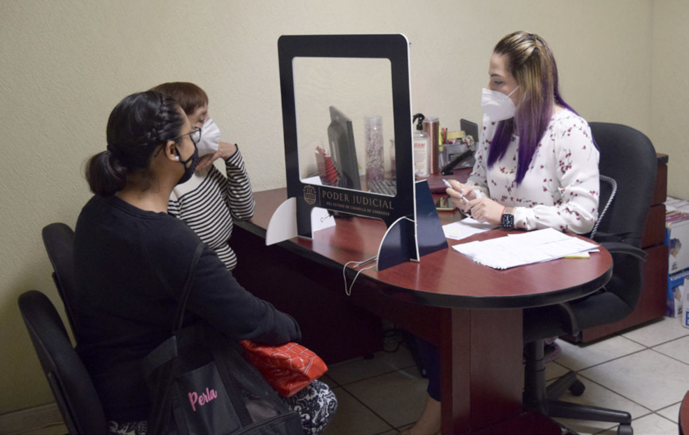